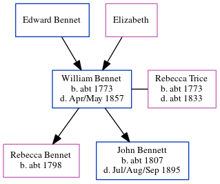

William Bennet c1773 - 1857
[ Home ] | [ Calendar ] | [ Surnames Index ] | [ Errors ] | [ Family History ]The child of Edward Bennet and Elizabeth, William Bennet, the 4 times great-grandfather of Nigel Horne, was born in Selling, Kent, England c. 17731,2, was baptised there on 24 Jan 1773 and married Rebecca Trice (with whom he had 2 children: Rebecca and John) in Wickhambreaux, Kent, England on 4 Mar 17944 (KFHS CD 22).
During his life, he was living in Wickhambreaux in 18411; and in Bridge, Kent, England in 18512 which is where he died in Apr/May 18573. He was buried Bridge Union Workhouse in Bridge on 5 May 1857 (KFHS CD22).
Parents
Children
- Rebecca was born c. 1798
- John was born c. 1807
Citations
- 1841 England Census Online publication - Provo, UT, USA: The Generations Network, Inc., 2006.Original data - Census Returns of England and Wales, 1841. Kew, Surrey, England: The National Archives of the UK (TNA): Public Record Office (PRO), 1841. Data imaged from the National
- 1851 England Census Online publication - Provo, UT, USA: The Generations Network, Inc., 2005.Original data - Census Returns of England and Wales, 1851. Kew, Surrey, England: The National Archives of the UK (TNA): Public Record Office (PRO), 1851. Data imaged from the National
- England & Wales, FreeBMD Death Index: 1837-1915 Online publication - Provo, UT, USA: The Generations Network, Inc., 2006.Original data - General Register Office. England and Wales Civil Registration Indexes. London, England: General Register Office. © Crown copyright. Published by permission of the Cont
- Familysearch.org (www.familysearch.org)
Family Tree
Map
Generated by ged2site. Last updated on Jul 3, 2024
Known Issues
Burial date (5 May 1857) has no citations